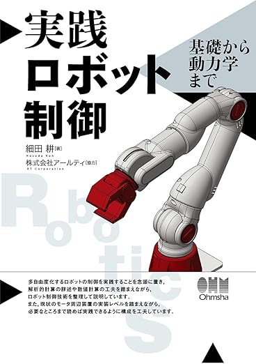
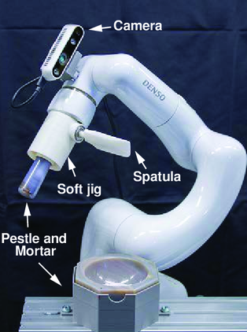
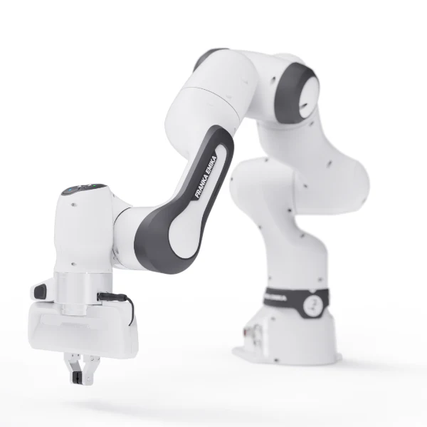
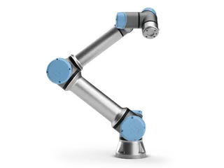
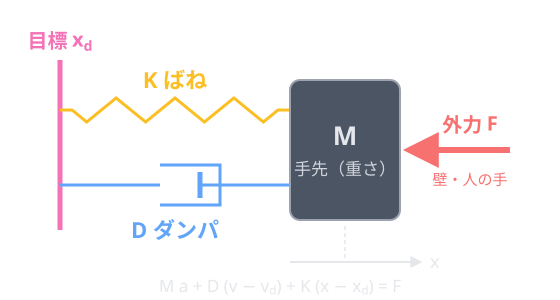
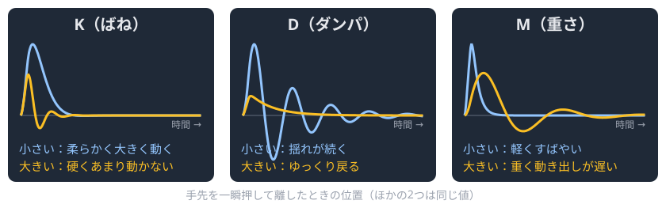
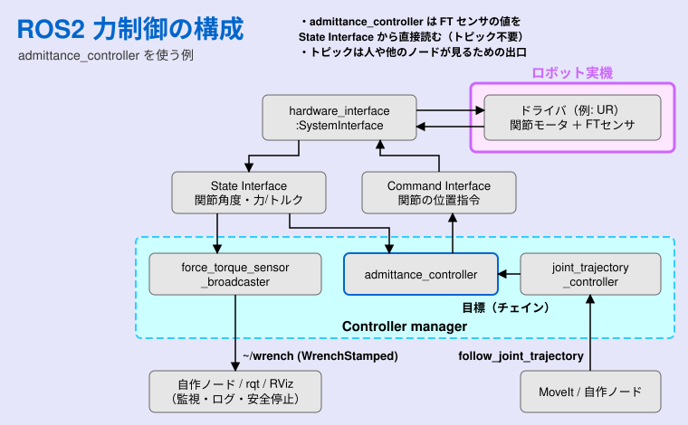

ゼロからのROS2
力制御とインピーダンス制御
大阪大学 中島優作
力制御参考資料
本スライド(実践)、教科書(理論)の併用がおススメ

ロボット工学の基礎から力制御理論まで、分かりやすいイラストで解説
インピーダンス制御の基礎理論も含まれている

力制御、インピーダンス制御の理論と実装の詳細解説
実際の接触タスクに必要な制御理論が充実
山野辺 夏樹: マニピュレーションにおける力制御の研究動向, 計測と制御, 56(10), pp.741-746, 2017
なぜ力制御が必要なのか？
- 位置制御は「高さ」を守る
→ 1 mm 程度のずれ・凹凸で力が数倍、逆なら離れる - 硬いワークほど、わずかなずれで力が急増
- 力制御は「押す力」を守る
→ ずれ・凹凸に倣って一定の力 - 研磨・嵌合・人との協調作業に必要
受動 vs 能動コンプライアンス
| 受動コンプライアンス | 能動コンプライアンス (力制御) | |
|---|---|---|
| 柔らかさの源 | ばね・ゲル等の機械要素 | 力覚センサ + サーボ制御 |
| 応答性 | ◎ 接触の瞬間から応答 | △ 制御周期・帯域に依存 |
| 柔らかさの変更 | △ 固定（部品交換が必要） | ◎ パラメータで自由に変更 |
| 安定性・導入 | ◎ 安定・安価・シンプル | △ 発振の恐れ・センサが必要 |
| 代表例 | RCC (Peg-in-Hole) | ハイブリッド / インピーダンス制御 |
出典: 山野辺 夏樹, 「マニピュレーションにおける力制御の研究動向」,
計測と制御, 56(10), pp.741-746 (2017) の分類をもとに作成
↓ で各方式を説明
用語の整理
ばね・ゲルなどの部品で柔らかくする
（例: RCC）
位置のずれ → 力を出す
測った力 → 位置を出す
（位置/力）
方向ごとに位置か力かを選ぶ
- インピーダンスとアドミッタンスは同じ式で入出力が逆（柔らかさを作る）
- ハイブリッドは「Z は 10 N で押す、XY は軌道どおり」のように力そのものを目標にする
用語の整理：ロボットの例

ソフトジグで乳杵を持って粉砕

Franka

UR
UR（force_mode）
- Franka：関節トルクセンサでトルクを直接出せる → インピーダンス制御
- UR：位置制御ロボット＋手先FTセンサ → 力から位置を作るアドミッタンス・ハイブリッド
受動の例：Y. Nakajima et al., "Force-controlled robotic mechanochemical synthesis", Digital Discovery, 3, 2130-2136 (2024)
受動コンプライアンス制御
能動コンプライアンス制御
能動コンプライアンス 3方式の比較
| インピーダンス制御 | アドミッタンス制御 | ハイブリッド位置/力制御 | |
|---|---|---|---|
| 何を制御 | 力と動きの関係（間接的） | 力と動きの関係（間接的） | 力そのもの（直接的） |
| 計算 | 位置のずれ → トルク指令 | 測った力 → 位置指令 | 方向ごとに位置か力かを選択 |
| 必要なもの | トルク制御ロボット | 位置制御ロボット ＋ FTセンサ | 位置制御ロボット ＋ FTセンサでOK |
| 得意 | 硬い物との接触・人との協調 | 位置が正確・産業用ロボットで手軽 | 一定の力で押す（研磨・ならい） |
| 苦手 | 摩擦・モデル誤差で位置がずれる | 硬い物 × 遅い周期で振動 | 接触が抜ける所（溝・端） |
↓ アプリで比較。詳しくは 6章（インピーダンス）・7章（アドミッタンス）
3方式をアプリで比べる
3リンクアームで、凹凸のあるワークを 10 N で押しながら横に研磨
- ハイブリッド：力が目標なので平均 10 N
- インピーダンス／アドミッタンス：凹凸で揺れ、柔らかいと力不足
- 「苦手な条件」ボタンで、各方式が崩れる極端な設定を再現
インピーダンス vs アドミッタンス
- インピーダンス制御
- 位置誤差から力（トルク）を計算
- 硬い環境との接触に強い
- 摩擦やモデル誤差で位置がずれやすい
- アドミッタンス制御
- 力から位置指令を計算
- 位置制御ベースで正確・産業用ロボット向き
- 硬い環境 × 遅い制御周期で振動しやすい
本スライドでは力制御の実装を扱います
- 実装方法1: インピーダンス制御
仮想スプリングダンパーシステムで柔軟性を実現
組み立てや研削作業に適している - 実装方法2: アドミッタンス制御
力入力から位置出力を生成
人間との協調作業や手動誘導に便利
標準の力制御コントローラはごく一部 → OSSパッケージを活用
力制御の種類と組み合わせ
| 制御方式 | 座標系 | ユーザーが実現したい制御 |
|---|---|---|
| インピーダンス制御 | 直交座標系 | 力(コンプライアンス) |
| アドミッタンス制御 | 直交座標系 | 位置(柔軟性) |
| ハイブリッド制御 | 直交座標系 | 位置+力 |
コントローラ名の読み方 (パッケージ名/クラス名)
cartesian_compliance_controller/CartesianComplianceController
ROS2標準のコントローラ
参考: Admittance Controller Documentation
- admittance_controller/AdmittanceController
- force_torque_sensor_broadcaster/ForceTorqueSensorBroadcaster
- joint_trajectory_controller/JointTrajectoryController (組み合わせ用)
admittance_controller は Humble（Ubuntu 22）から標準
インピーダンス制御・ハイブリッド制御は標準には無い
コンプライアンス制御用のOSSコントローラ
参考: fzi-forschungszentrum-informatik/cartesian_controllers
ros2_controllersに無い直交空間のコンプライアンス制御を補う定番パッケージ
FZI製・ROS1/ROS2対応・BSD-3ライセンス
- cartesian_motion_controller: 目標姿勢に追従 (位置)
- cartesian_force_controller: 目標の力に追従 (力)
- cartesian_compliance_controller: 両者を重ね合わせ (位置+力)
→ 方向ごとに剛性と目標力を決めれば
ハイブリッド的にも使える
インピーダンス制御用のOSSコントローラ
参考: matthias-mayr/Cartesian-Impedance-Controller
直交空間インピーダンス制御の C++ 実装
ROS1/ROS2（ros2_control）対応・BSD-3ライセンス
- 関節トルク指令 ＝ インピーダンス項 ＋ 零空間項 ＋ 目標レンチ項
- 剛性・減衰・目標姿勢・目標レンチを実行中に軸ごとに変更できる
- トルク指令できるロボットが前提（Franka FR3/Panda、KUKA iiwa で動作確認）
- UR などの位置制御ロボットには不向き
→ FZI の compliance や admittance_controller を使う
Mayr & Salt-Ducaju, "A C++ Implementation of a Cartesian Impedance Controller for Robotic Manipulators", JOSS 9(93), 5194 (2024)
コラム本当に力“制御”が必要か？
コラム受動で力を制御した事例
力制御全般
力制御に必要なハードウェア
（UR、一般の産業用ロボット）
- 必要：手先の6軸力覚センサ
- できる：アドミッタンス制御
（位置制御主体＋手先FTセンサ向けの方法） - できない：インピーダンス制御
（トルクを直接出せない） - 関節電流から力を推定する機種も
（精度はロボット次第）
（Franka、KUKA iiwa）
- 必要：関節トルクセンサ（内蔵）
- できる：インピーダンスもアドミッタンスも
- 柔らかく動かすならインピーダンスが自然
（例：FR3 の
cartesian_impedance_controller
→ 手先FTセンサなしで柔らかくできる） - 関節空間 → トルクをそのまま使う
- 直交空間 → 手先の力に変換
（F = J−Tτ）
関節トルクを出せるかどうかで、使える力制御が大きく変わる
力制御は制御周波数が効く
- 能動制御は「測る → 計算 → 指令」を 1 周期ごとに繰り返す。周期の間は前の指令のまま
- 硬い物ほど、その間に力が一気に変わる → 行き過ぎて振動・跳ね返り
- 安定に出せる硬さは周期におおよそ反比例（K < 2b/T、Colgate & Schenkel 1997）
何 Hz あればいい？（目安）
| 位置制御 | 100〜125 Hz | 人の動き（〜10 Hz）より十分速ければよい |
| やわらかい接触 | 125〜500 Hz | ならい・フリードライブ。産業用ロボットの 125 Hz でも動く |
| 硬い物・研磨 | 500 Hz〜1 kHz | 硬いほど速い周期が必要（前のスライド） |
| 力触覚伝送 | 最低 1 kHz | 人が感じる帯域（〜1 kHz）を伝える。遅いと細かい感触が消える |
インピーダンス制御
インピーダンス制御とは

- 仮想的なスプリング・ダンパー・質量システムを実現
- 目標位置と現在位置の差から力を計算
- 接触力を制限して安全な作業が可能
インピーダンス制御の数式
F = Mẍ + Dẋ + K(x - x_d)
- F: 発生する力
- M: 仮想慣性
- D: 仮想粘性
- K: 仮想弾性
- x - x_d: 位置誤差
手先の力 ⇔ 関節トルク：ヤコビアン
τ = JT F F = J−T τ
- インピーダンス制御は手先で力 F を計算 → τ = JT F で関節トルクにしてモータへ
- 関節トルクセンサから手先の力を知るときは逆向き（F = J−T τ）
- J は「関節速度 → 手先速度」と同じ行列。姿勢で変わる
- 腕が伸びきる（特異姿勢）と J−T が求まらない
インピーダンスパラメータの調整

- K：硬さ（押されたときの逃げにくさ） D：揺れの止まりやすさ M：重さ（動き出しの遅さ）
- 作業に合わせて調整（例：人と協調 → K 小・D 大、位置決め → K 大）
アドミッタンス制御
アドミッタンス制御とは
- インピーダンス制御の逆
- 力入力 → 位置出力
- 人間の手動誘導に適している
- メリット
- 直感的な操作が可能
- 安全性が高い
アドミッタンス制御の数式
M ac + D (vc − vd) + K (xc − xd) = F
- F：FTセンサで測った外力（入力）
- xc：計算した手先の位置指令（出力）。vc, ac はその速度・加速度（vd は目標の速度）
- xd：本来の目標位置（軌道）
- M / D / K：仮想の重さ / ダンパ / ばね（自分で決める）
- F を測る
- ac = M−1 [F − D(vc − vd) − K(xc − xd)]
- 積分して vc, xc を更新
- xc を位置制御に渡す（制御周期ごとに繰り返す）
力が 0 なら xc → xd（ふつうの位置制御と同じ）
ROS2での力制御実装

admittance_controller は力を State Interface から直接読む ／ ~/wrench トピックは監視・安全停止用の出口
FTセンサのセットアップ
力センサーの取り付けとキャリブレーション
- センサーの物理的取り付け
- オフセットキャリブレーション
- ROS2でのトピック配信確認
- トピックだけ出すドライバは admittance_controller に直接は入らない
アドミッタンス制御の設定
admittance_controller:
ros__parameters:
joints: [joint1, joint2, ...]
kinematics:
plugin_name: kinematics_interface_kdl/KinematicsInterfaceKDL
base: base_link
tip: tool0
ft_sensor:
name: ft_sensor_name
frame: {id: link_6} # センサの座標系
control:
frame: {id: tool0} # 制御する点（TCP）
gravity_compensation: # ツールの重さを差し引く
frame: {id: tool0}
CoG: {pos: [0.1, 0.0, 0.0], force: 23.0} # 重心, 重さ[N]
admittance:
selected_axes: [true, true, true, true, true, true]
mass: [5.5, 6.6, 7.7, 8.8, 9.9, 10.1]
damping_ratio: [2.83, 2.83, 2.83, 2.83, 2.83, 2.83]
stiffness: [214.1, 214.2, 214.3, 214.4, 214.5, 214.6]
ros2_controllers（humble）の test_params.yaml を抜粋・簡略化（joints・interfaces などは省略。そのままでは動かない）
- 設定ファイル: YAMLでパラメータを定義
- センサー連携: force_torque_sensorとの結合
- 安全設定: 力の上限値や速度制限
- チューニング: M, D, Kパラメータの調整
アドミッタンス制御の実装
コラムアドミッタンス制御も色々
インピーダンス／アドミッタンス制御は考え方の名前で、実装の方式は色々研究されている
方式やパラメータで手応えがかなり変わる → 2つのコントローラで比べる
| admittance_controller （ros2_controllers） |
cartesian_compliance_controller （FZI） |
|
|---|---|---|
| 剛性 K | どちらも 500 N/m（10 N 押すと 2 cm ずれる） | |
| 計算の仕方 | M·a + D·v + K·x = F を実時間で積分 | 軽い仮想ロボットの順動力学 |
| 減衰 D | 200 N·s/m 下げると軽くなるが、硬い物で振動・不安定に | 約 20 N·s/m（約 1/10） 仮想ロボットの順動力学で実効的に小さい |
| 力の入力の遅れ | 約 0.4 s 力を強く平滑化（filter_coefficient 0.005） | 数 ms 20 Hz ローパスだけ（制御周期はどちらも 2 ms） |
| 手応え | 重くて粘い | 軽くて速い |
止まったときのバネは同じ。差は動き出すまでの重さ（質量・減衰）と力の入力の遅れ
コラム2つの制御則の中身
（ros2_controllers）
- M·a + D·v + K·x = F を実時間のまま積分
- D = 2ζ(MK)1/2 = 200 N·s/m
（M = 5 kg, K = 500 N/m, ζ = 2）
→ 0.1 m/s で動かすだけで約 20 N - 力は強い平滑化（係数 0.005）
→ 遅れ 約 0.4 s、離しても押され続ける
（FZI）
- 正味の力 ＝ K·(目標 − 現在) ＋ 計測力
- ほぼ質量の無い仮想ロボットに加え、
順動力学で関節の動きを求める - 仮想時間は実時間の約10倍速
→ 概算 D ≈ 20 N·s/m、立ち上がり約 20 ms - 力は 20 Hz ローパスだけ → 遅れは数 ms
コラム押して離したときの動き
- admittance を軽くするなら：
damping_ratioを 0.7〜1 に（D = 70〜100 N·s/m）、filter_coefficientを 0.05 程度に（時定数 約 40 ms）
ただし D を下げすぎると、硬い物に触れたとき振動・不安定になりやすい
※ admittance は設定値どおりの式で計算。FZI は手先質量 1 kg・並進だけの概算（関節空間の慣性・d ゲインは未考慮）。どちらも実機の測定値ではない
ハイブリッド位置/力制御
仮想仕事の原理：τ = JT F
- つり合っていれば関節がする仮想仕事 = 手先がする仮想仕事
- 手先に力 F を出したい → 必要な関節トルクは τ = JT F
- 外力 Fext がわかれば −JT Fext を足して打ち消せる
- 逆に関節トルクから手先の力：F = J−T τ（特異姿勢でなければ）
力を手先の方向（x, y, z）ごとに扱える → 次は制御則へ
位置も力も「手先の力」で書く
- 位置制御：目標とのずれをばね・ダンパの力に変える（手先の PD 制御）
- 力制御：目標の力を出しつつ、FTセンサで測った力との差を補正
- どちらも出力は手先の力 F → 仮想仕事の原理 τ = JTF で関節へ
- 同じ「手先の力」だから方向ごとに選んで足せる → 選び方が選択行列 S
選択行列 S：方向ごとに位置か力か
- S：方向ごとに 0 = 位置制御、1 = 力制御
- 指令 = (I − S) 位置制御 ＋ S 力制御
- 関節へは τ = JT( … )（仮想仕事の原理）
- 位置と力の方向が直交 → 干渉しない
位置制御ロボットでは手先の位置指令に S をかける
（位置/力ハイブリッド制御：Raibert & Craig, 1981）
位置と力をどう合成するか
- 位置ループと力ループを並べて、誤差に S をかけて方向を振り分ける
- F = (I − S) Fpos ＋ S Ffrc → τ = JTF（S = 0 の方向は位置、1 の方向は力だけが効く）
- 位置制御ロボットでは力制御則の出力を位置指令の補正にする（UR の force_mode）
ハイブリッド位置/力制御の使われ方
- 研磨：Z は力、XY は位置
- 位置制御ロボット＋FTセンサでできる
- 産業用でよく使う：研削・研磨・嵌合
- UR：
force_mode()で力の軸と目標を指定 - ROS2：FZI の compliance controller で近い動き
活用事例：フリードライブ
- ロボットを手で掴んで動かせるモード
- 教示・位置合わせに使う（ペンダントより速い）
- 中身は多くの場合アドミッタンス制御：
押された力 → 位置・速度の指令 - 実装方法はロボットによって違う↓
フリードライブの実装方法
τ = g(q)（K = 0）
手首のボタンを押しながら動かす
→ 関節の位置・速度制御
ペンダント背面のボタン / URScript の freedrive_mode()
トルクを直接出せる機種はインピーダンス型、出せない機種はアドミッタンス型になりやすい
※ 内部実装は公式には非公開。各ロボットの制御方式からの推定
フリードライブと接触作業の制御的な違い
M x″ + D x′ + K (x − xd) = Fext
- 同じ式で、違いはばね K（と目標 xd）があるかだけ
- 接触作業：目標を壁の少し奥に置くと、押し付け力 ≈ K (xd − x)
- フリードライブの「重さ」＝仮想質量 M（動かしやすさ）
- 「軸ロック」＝特定の方向をアドミッタンス計算から外す → XY 平面だけ動かせる